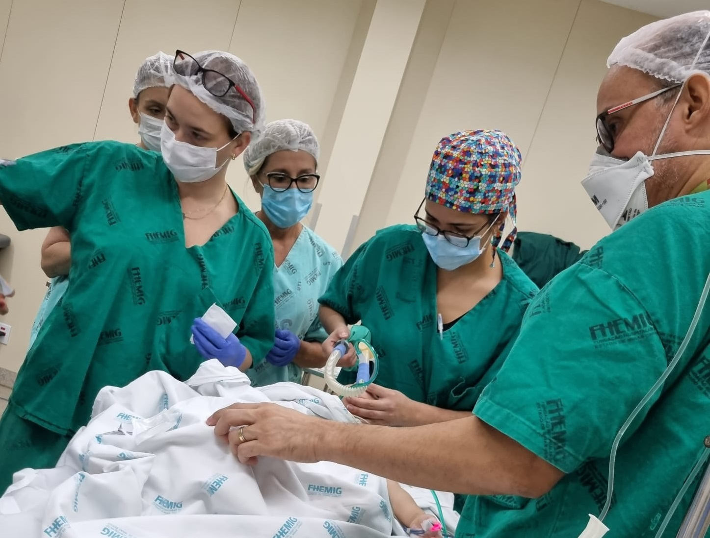
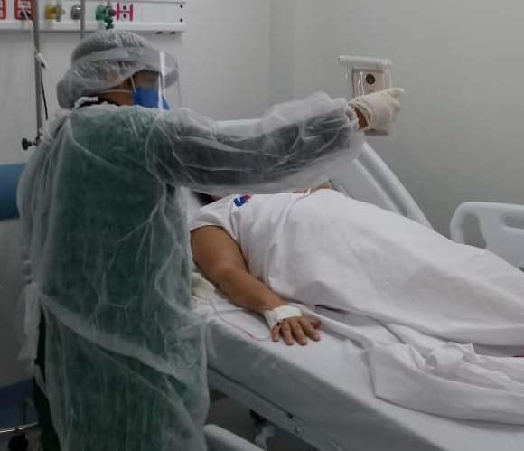

Bem-vindo ao hospital
Bem vindo ao nosso hospital. Temos corpo clínico e o serviço de arquivo médico e estatística, o setor administrativo de manutenção e o setor financeiro.
Serviços
Medicos especializados em todas as areas. como Cardiologista, Cirurgião, Clínico geral, Dermatologista, Endocrinologista, Gastroenterologista, Médico geneticista também é um dos tipos de médicos e Geriatra.
Termos de operações
Termos para serem assinados pelos pacientes. texto claro, cores bem escolhidas, links da empresa e de redes sociais, de preferência embutidas nos próprios ícones, imagens harmônicas, bem escolhidas e distribuídas.
Emergência
Os tipos de emergencias que o hospital atende. Corte profundo, Acidente de origem elétrica, Picada ou mordida de animais peçonhentos, Queimaduras, Afogamentos, Hemorragia, Infarto do miocárdio e Dificuldade respiratória.Somos um Hospital

Como nós somos
Nós somos medicos que gostamos de pacientes e os preparamos eles para consultas, exames e tratamentos. executar tratamentos prescritos, prestar cuidados de higiene, conforto e alimentação, zelar pela segurança. do paciente, executar atividades de desinfecção e esterilização. Quer saber mais

O que fazemos
Nós somos especializados em cirurgias. essas são as cirurgias que fazemos: Cirurgia neurológica, Cirurgia bucomaxilofacial, Cirurgia oftalmológica, Cirurgia otorrinolaringológica, Cirurgia de cabeça e pescoço, Cirurgia cardíaca, Cirurgia torácica e Cirurgia do aparelho digestivo. Quer saber mais

Nossa missão
Nós medicos temos a missão de Atuar com excelência, em benefício da sociedade, na supervisão da ética profissional médica, por meio de ações regulamentadoras, educacionais, fiscalizadoras, judicantes, cartoriais e políticas. Quer saber mais
O modelo do nosso hospital é a melhor solução para todas as suas necessidades! para perguntas
clique aqui.
Nossos Serviços

Designer do Hospital
A área do nosso Design de Hospital é bem ampla e isso acaba refletindo nas definições que se encontra no nosso Hospital.
Desenvolvimento do Hospital
Os principais departamentos de um hospital são o seu corpo clínico (diretoria médica) e o serviço de arquivo médico e estatística (SAME); o setor administrativo de manutenção e o setor financeiro.
Design gráfico do Hospital
O design gráfico usa composições visuais para resolver problemas e comunicar idéias por meio de tipografia, imagens, cores e formas do Hospital.
Serviços do Seo do Hospital
Atua no planejamento estratégico da organização e no gerenciamento de um hospital. Mantém a infraestrutura do espaço físico, determinando o melhor uso para ele. Define o número de médicos, enfermeiros e especialidades que o local pode atender.
Desenvolvimento de aplicativos de Hospital
A tecnologia também tem ajudado muitas pessoas que enfrentam problemas com doenças crônicas ou que precisam aumentar a vigilância da saúde, como o consumo de medicamentos ou controle de medidas como a pressão arterial ou a glicemia.
Anúncio do Hospital
O Hospital deve ter pelo menos um designer gráfico que é responsável por criar a parte visual de materiais como sites, panfletos, outdoors, banners, embalagens, anúncios, campanhas e logotipos.